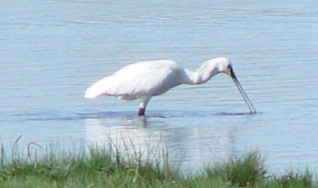
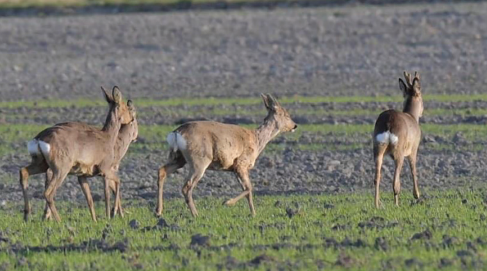

Egholm
The first motorized mail boat arrived on the island in 1914, and
The state bridge at Nørredyb was built in 1918, partly financed by state funds. A fixed ferry connection to Aalborg was established in 1972. In 2014, a new and larger ferry was deployed to carry over 60,000 passengers to and from the island annually. The island previously had its own dairy, school, smithy and telephone exchange. The school works today as a camp school.

Foxes, hares, hedgehogs, ermines and even otters can also be experienced on the island with a little luck.
